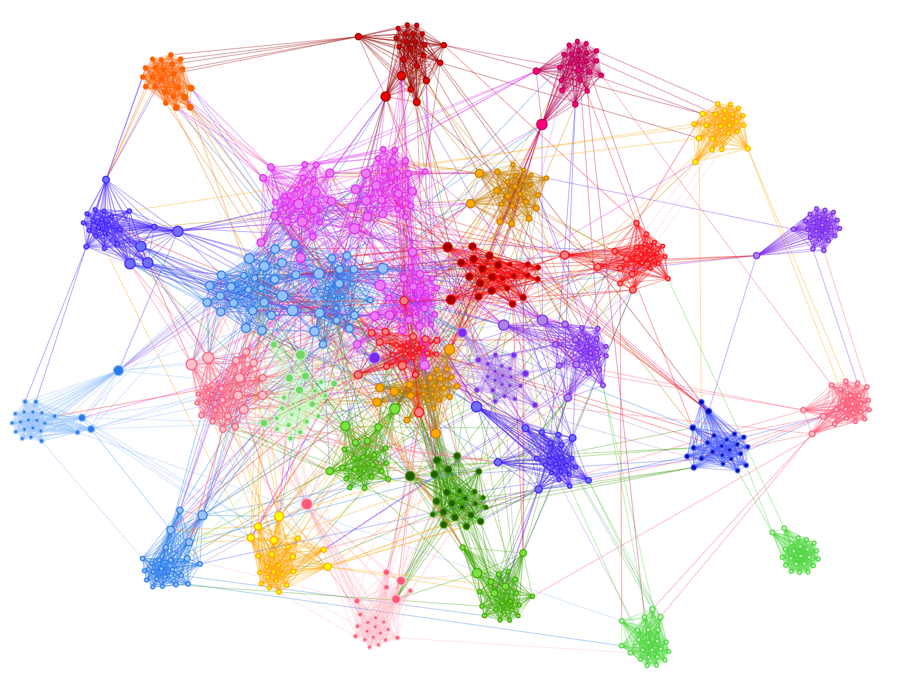
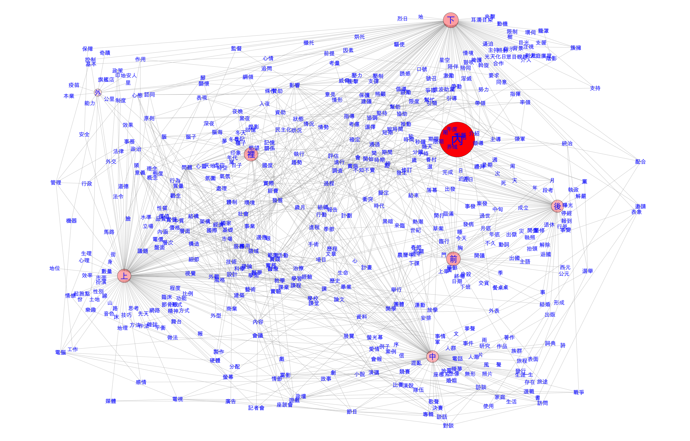
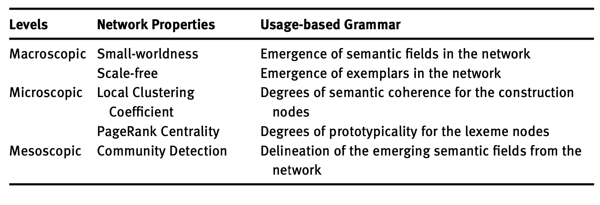

Network Representation of Constructional Semantics
20 August, 2021, ICCG11
Outline
- Background of the Study
- Space Particle Construction
- From Corpora to Network
- Network Analysis of Constructional Semantics
- Conclusion
Background of the Study
Co-occurrences of Linguistic Units
Co-occurrences have been the central focus of usage-based linguistics.
- Collocation, Colligation, Collostruction
- With the increasing availability of corpora data, sequential orders of words in use are closely connected to the semantics of the units, forming the basis for their semantic representation (i.e., Distributed Semantic Representation)
How to represent constructional semantics?
- When we study lexical semantics, we look at words’ collocates and identify the emerging semantic coherence from these collocates.
- The distributional hypothesis has been widely applied to the study of constructional semantics.
Grammar as Network

- Language consists of words and constructions.
- Every word or construction would develop their own preferred linguistic co-texts/contexts in language use.
- The emerging patterns in these preferred linguistic co-texts/contexts are the semantic traces of these words or constructions.
Space Particle Constructions
SPC in Mandarin
「在zai + Reference_Landmark + Space_Particle」
- 在zai…LM 下xia ‘DOWN/BELOW’
- 在zai…LM 上shang ‘UP/ON’
- 在zai…LM 前quian ‘IN FRONT OF’
- 在zai…LM 後hou ‘behind’
- 在zai…LM 中zhong ‘IN’
- 在zai…LM 內nei ‘IN’
- 在zai…LM 裡li ‘IN’
- 在zai…LM 外zhong ‘OUTSIDE OF’
Keys for constructional semantic representation?
Hard to make a list of definitions
Constructional meaning by use:
- Links between construction and word：Which words tend to co-occurr with the construction?
- Links between word and word：For those words co-occurring with the construction, how are these words connected？
- Links between construction and construction：Is one SPC more connected to a specific SPC? (e.g., zai+LM+xia vs. zai+LM+shang, zai+LM+xia vs. zai+LM+nei)
From Corpora to Network
Corpus Learning
- Corpus data are a good source for the modeling of the linguistic co-occurrences, i.e., the three types of links (word-construction, word-word, construction-construction).
- With these links, we can create a grammar network, which could quantitatively represent the distributional patterns of the constructions.
- We can then utilize the network science methods to both visualize and analyze the constructional semantics quantitatively, which can be a very important step to the modeling of our knowledge of grammar network.
- Barabási, Albert-László. (2016). Network Science. Cambridge University Press.
- Diessel, Holger. (2019). The Grammar Network: How Linguistic Structure is Shaped by Language Use. Cambridge University Press.
(1) Word-Construction Links
Collostruction Analysis
- Collexeme Analysis
- Co-varying Collexeme Analysis
- Distinctive Collexeme Analysis
- Stefanowitsch, A. & Gries, S.T. 2003. Collostructions: Investigating the interaction of words and constructions. International Journal of Corpus Linguistics, 8(2), 209-243.
- Gries, S. T., & Stefanowitsch, A. 2004. Co-varying collexemes in the into-causative. Language, Culture, and Mind, 225-236.
- Gries, S. T., & Stefanowitsch, A. 2004. Extending collostructional analysis: A corpus-based perspective on alternations’. International Journal of Corpus Linguistics, 9(1), 97-129.
(2) Word-Word Links
- Words (landmark collexemes) can be connected via multiple relationships (e.g., morphosyntactic, semantic, pragmatic ones).
- Here we simplify the matters by modeling the semantic relationships between words (e.g. 情況, 情形, 狀況, 環境).
- We used the pre-trained word embeddings to identify the semantic connections among these collexemes.
(3) Construction-Construction Links
- Following the distributional semantics hypothesis, we can measure the pairwise semantic connections between the space particle constructions by their similarities in their co-occurring landmark collexemes.
- If two space particle constructions co-occur with similar sets of landmark collexemes, they are also more likely to be semantically connected.
Space Particle Network
Specific Particle Constructions (I)

Specific Particle Constructions (II)

Network Analysis of Constructional Semantics
Three Levels of Network Analysis
- Macroscopic Analysis: Examine the properties of the entire graph
- Microscopic Analysis: Examine the properties of the nodes
- Mesoscopic Analysis: Examine the groupings of the nodes, i.e., the emergence of the Community in the graph
- Siew, Cynthia S. Q., Dirk U. Wulff, Nicole M. Beckage & Yoed N. Kenett. 2019. Cognitive network science: A review of research on cognition through the lens of network representations, processes, and dynamics. Complexity 2019. 1–24.
Macroscopic Analysis
Common Structures in Social Networks
Scale-free:
- a pattern in which there are usually only a few nodes with high degrees and many more with low degrees.
Small-world:
- a tendency in which a network usually consists of several small communities or clusters where the within-community edges are much stronger than across-community ones.
- Barabási, Albert-László & Re ́ka Albert. 1999. Emergence of scaling in random networks. Science 286(5439). 509–512.
- Watts, Duncan J. & Steven H. Strogatz. 1998. Collective dynamics of ’small-world’networks. Nature 393(6684). 440–442.
Macroscopic Analysis of SPC
- Small-world: Semantically connected nodes form small clusters in the network, suggesting the emergence of semantic fields of the collexemes
- Scale-free: Only a few linguistic units (central nodes) in the system are frequently connected to other linguistic units, likely to be important exemplars, or “cognitive reference points” (Diessel 2019: 34)
Microscopic Analysis
Node-level Metrics
- Local Clustering Coefficient: a metric that indicates the extent to which the neighbors of a node are interconnected – namely, whether a node’s neighbors are also neighbors of each other.
- Centrality：a metric that characterizes the importance of a node beyond its immediate neighbors.
- Also known as Local Transitivity.
- Common metrics for node centrality include: Betweenness, PageRank, Authority, Closeness.
- Construction Nodes: The local clustering coefficient values indicate the degrees of semantic coherence of their collexemes.

- Lexical Nodes (Landmark): The centrality values indicate which nodes are more central, thus more likely to be an exemplar of the sub-network.

Mesoscopic Analysis
- In network science, we can identify small clusters as communities using the algorithms of community detection.
These communities arising from the construction network may indicate the emergence of specific semantic fields.
Conclusion

Thank you!
References：
- Barabási, Albert-László. 2016. Network science. Cambridge: Cambridge University Press.
- Diessel, Holger. 2019. The grammar network: How linguistic structure is shaped by language use. Cambridge, UK: Cambridge University Press.
- Chen, Alvin Cheng-Hsien. In press. Words, constructions and corpora: Network representations of constructional semantics for Mandarin space particles. Corpus Linguistics and Linguistic Theory 19(1). https://doi.org/10.1515/cllt-2020-0012. (Supplementary Materials)